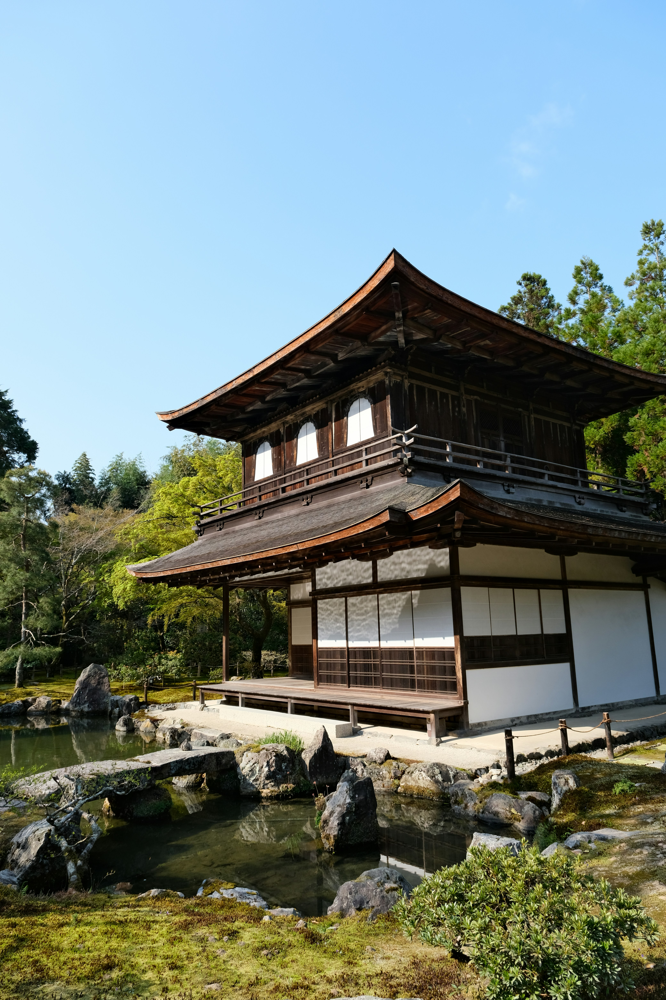
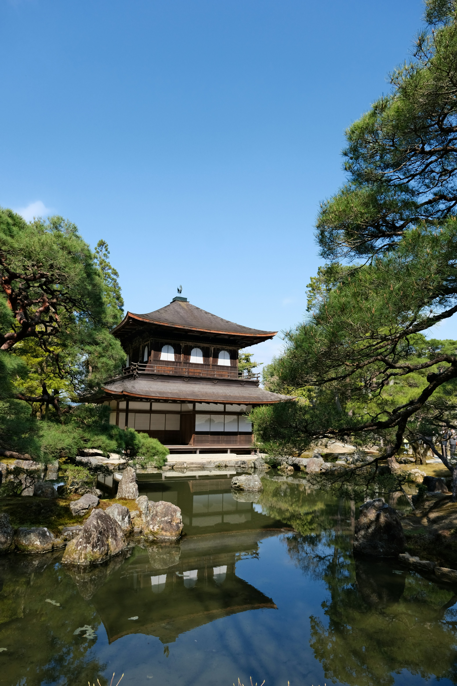
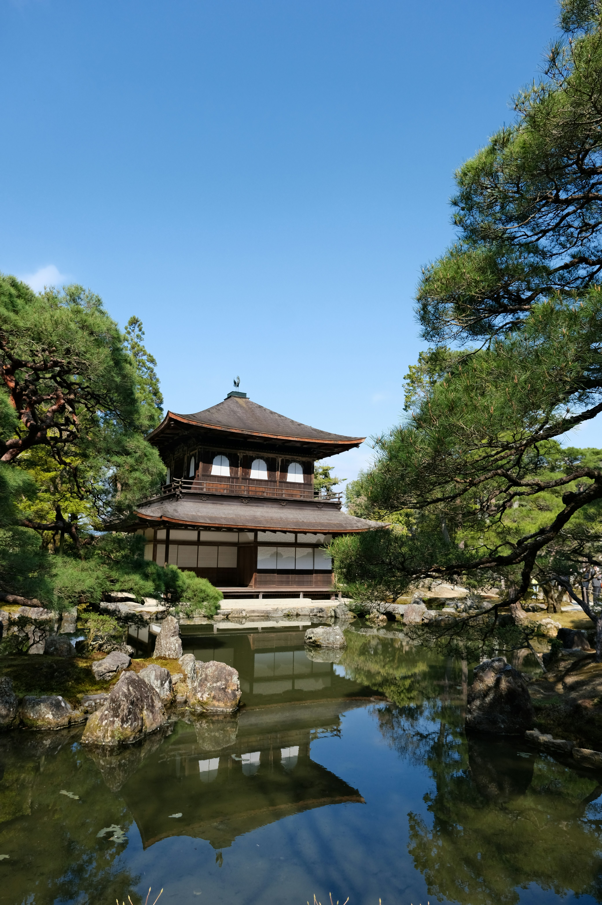
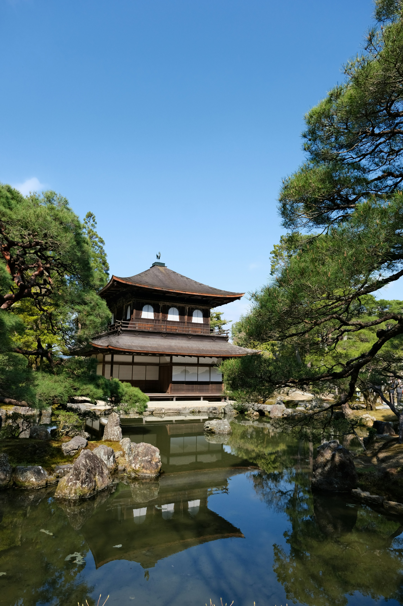

KYOTO
Former capital and cradle of Japanese culture, Kyoto is a traditional city known as the "heart of Japan."
Located in the southern part of the country, on the island of Honshu, about 550 km from Tokyo, the city has around 1.5 million inhabitants and enchants over 50 million tourists who visit it every year.
It served as the country's capital for over a millennium until 1868 when it was replaced by Tokyo (formerly Edo), and it preserves Japanese history and culture.
Main Attraction
Ginkaku-ji
Known also as the Silver Pavilion Temple in Kyoto or simply the Silver Pavilion, Ginkaku-ji is one of the oldest structures in the city.
Its construction began in the year 1460, commissioned by the shogun Ashikaga Yoshimasa, who at the time intended the site to be a garden retreat for his retirement years.
Despite being called the Silver Pavilion, it was never actually covered in silver. It is believed that the name emerged more than a century after its construction as a nickname to contrast with the Golden Pavilion.

 

